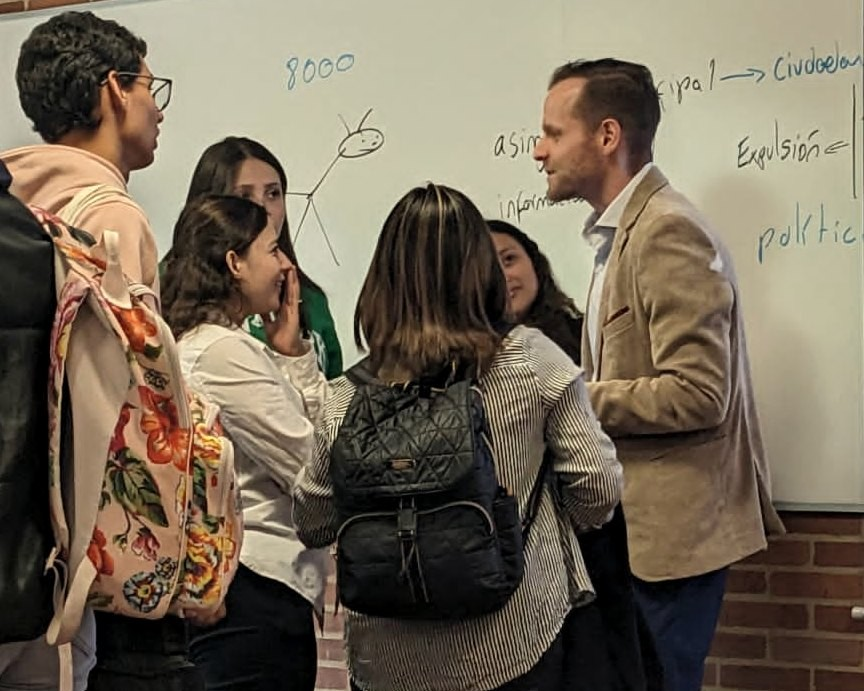

Professional Language Development
Ongoing, structured instruction built around your role, your sector, and the people you need to convince.
Typical work
- Meetings and calls
- Professional correspondence
- Presentations and negotiations
Language Institute
Structured language instruction for professionals and academics who need to communicate with confidence, precision, and purpose.
The situations
“I understand everything in the meeting. By the time I have found the right words, the conversation has moved on.”
Many professionals know this moment. The Institute builds your language until the words are there when you need them.
Learners come to us to
Preparing for one specific talk or negotiation? See Communication Consulting →
The approach
Each program begins with an assessment and a plan.
Instruction then combines structured language development with practical work on the situations that matter to you: correspondence, presentations, meetings, negotiations, and everyday interaction.
Serious independent learners and beginners are welcome.

Programs
Ongoing, structured instruction built around your role, your sector, and the people you need to convince.
Typical work
For academics and researchers who present, write, and discuss their work in a second language. Thesis supervision stays with your university.
Typical work
Daily instruction before a new job or a move abroad.
Explore Language Immersion →Format
The Kantor Method
Goals are set at the start and reviewed regularly. We do not promise a fixed level by a fixed date.
Which one do I need?
This page
Making the Case connects the two: advanced language work joined to persuasive communication.
The step into persuasion
Communicate with authority in your second language.
A three-month development program that combines advanced language work with practical preparation for presentations, meetings, negotiations, and other demanding professional situations.
For professionals whose role now requires them to defend positions, persuade stakeholders, and explain complex ideas.
See Making the Case in Communication Consulting →What the program includes
Making the Case is an individual program of Communication Consulting.

Your trainers
Dr. Dorian Kantor and his team bring together fluency in four languages and decades of teaching experience across private tutoring, in-company language courses, and university education. Drawing on his 20 years in the field, Dr. Kantor developed the Kantor Method, a structured five-step approach designed to help learners communicate effectively in professional settings.
Every Kantor Communication trainer is hired at native or bilingual level and trained to apply the Kantor Method in their teaching.
Language Institute reviews
5.0 · 10 reviews
“He always takes the time to address my questions and focuses on my individual gaps, which helps me improve quickly and efficiently.”
“We have very enjoyable conversations in both legal language and everyday English.”
“He also gives helpful tips and provides great new input through small exercises, whether it's about grammar or improving expression in English.”
Have another question? Ask us directly in a short call.
Book an introductory call →Contact
Tell us the language, where you are starting from, and what you need it for. We will reply with a proposed plan.